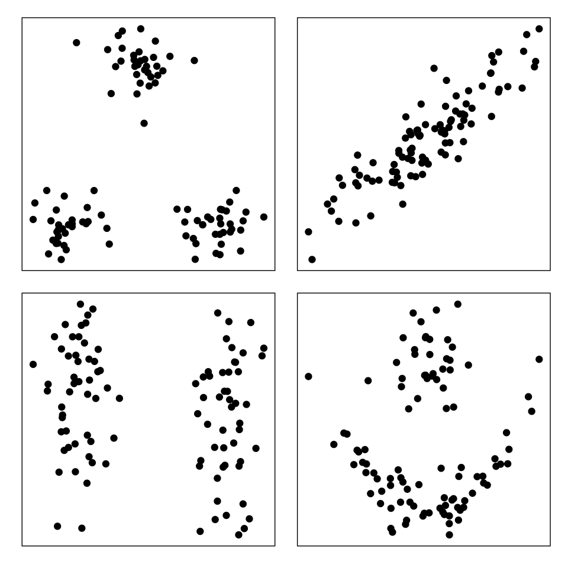
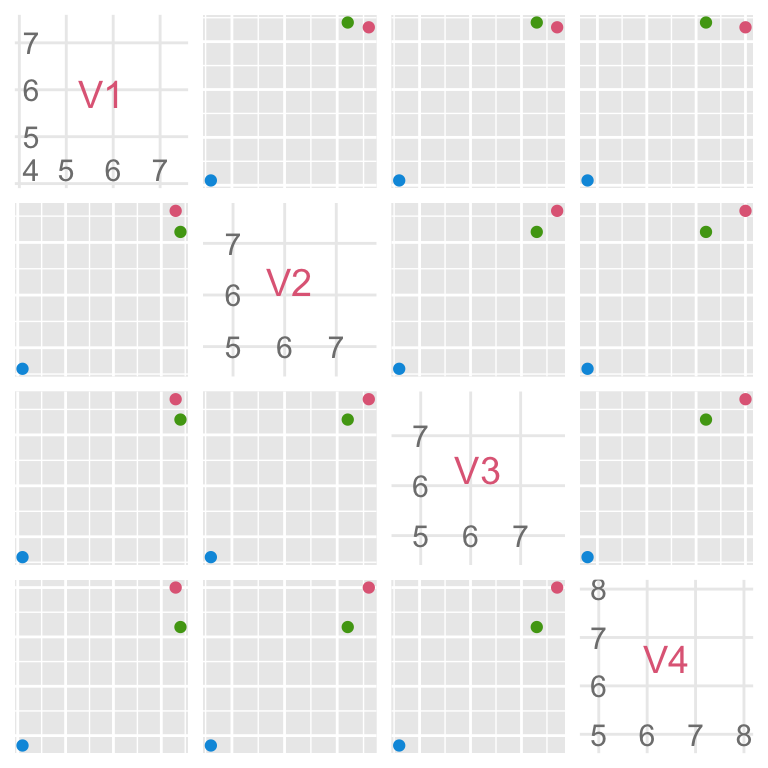
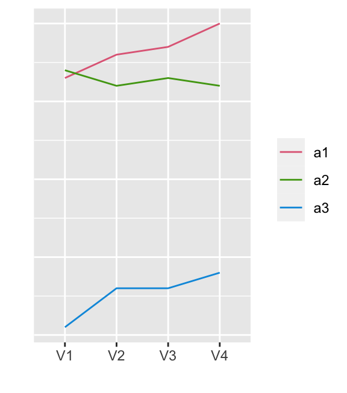

Unsupervised learning
Unsupervised classification, or cluster analysis, organizes observations into similar groups. Cluster analysis is a commonly used, appealing, and conceptually intuitive statistical method. Some of its uses include market segmentation, where customers are grouped into clusters with similar attributes for targeted marketing; gene expression analysis, where genes with similar expression patterns are grouped together; and the creation of taxonomies for animals, insects, or plants. Clustering can be used as a way of reducing a massive amount of data because observations within a cluster can be summarized by its centre. Also, clustering effectively subsets the data thus simplifying analysis because observations in each cluster can be analyzed separately.
Organizing objects into groups is a task that comes naturally to humans, even to small children. Perhaps this is why it is an appealing method of data analysis. However, cluster analysis is more complex than it initially appears. Many people imagine that it will produce neatly separated clusters like those in the top left plot of Figure 1, but it almost never does. Such ideal clusters are rarely encountered in real data, so we often need to modify our objective from find the natural clusters in this data. Instead, we need to organize the cases into groups that are similar in some way. Even though this may seem disappointing when compared with the ideal, it is still often an effective means of simplifying and understanding a dataset.
At the heart of the clustering process is the work of discovering which variables are most important for defining the groups. It is often true that we only require a subset of the variables for finding clusters, whereas another subset (called ) has no impact. In the bottom left plot of Figure 1, it is clear that the variable plotted horizontally is important for splitting this data into two clusters, whereas the variable plotted vertically is a nuisance variable. Nuisance is an apt term for these variables, because they can radically change the interpoint distances and impair the clustering process.
Dynamic graphical methods help us to find and understand the cluster structure in high dimensions. With the tools in our toolbox, primarily tours, along with linked scatterplots and parallel coordinate plots, we can see clusters in high-dimensional spaces. We can detect gaps between clusters, the shape and relative positions of clusters, and the presence of nuisance variables. We can even find unusually shaped clusters, like those in the bottom right plot in Figure 1. In simple situations we can use graphics alone to group observations into clusters, using a “spin and brush” method. In more difficult data problems, we can assess and refine numerical solutions using graphics.
This part of the book discusses the use of interactive and dynamic graphics in the clustering of data. Section 1 introduces cluster analysis, focusing on interpoint distance measures. ?sec-clust-graphics describes an example of a purely graphical approach to cluster analysis, the spin and brush method. In the example shown in that section, we were able to find simplifications of the data that had not been found using numerical clustering methods, and to find a variety of structures in high-dimensional space. Chapter 8 describes methods for reducing the interpoint distance matrix to an intercluster distance matrix using hierarchical algorithms, Chapter 10 covers model-based clustering, and Chapter 11 described clustering with self-organising maps. Each of these chapters shows how graphical tools can be used to assess the results of numerical methods. Chapter 12 summarizes the chapter and revisits the data analysis strategies used in the examples. Additional references that provide good companions to the material presented in these chapters are Venables and Ripley (2002), Boehmke and Greenwell (2019), Hennig et al. (2015), Giordani, Ferraro, and Martella (2020), Kassambara (2017), and the CRAN Task View (Leisch and Gruen 2023). Chapter 12 summarizes the chapter and revisits the data analysis strategies used in the examples.
Background
Before we can begin finding groups of cases that are similar, we need to decide on a definition of similarity. How is similarity defined? Consider a dataset with three cases \((a_1, a_2, a_3)\) and four variables \((V_1, V_2, V_3, V_4)\), described in matrix format as
\[ \require{mathtools} \definecolor{grey}{RGB}{192, 192, 192} \]
\[\begin{align*} X = \begin{bmatrix} & {\color{grey} V_1} & {\color{grey} V_2} & {\color{grey} V_3} & {\color{grey} V_4} \\\hline {\color{grey} a_1} | & x_{11} & x_{12} & x_{13} & x_{14} \\ {\color{grey} a_2} | & x_{21} & x_{22} & x_{23} & x_{24} \\ {\color{grey} a_3} | & x_{31} & x_{32} & x_{33} & x_{34} \end{bmatrix} = \begin{bmatrix} & {\color{grey} V_1} & {\color{grey} V_2} & {\color{grey} V_3} & {\color{grey} V_4} \\\hline {\color{grey} a_1} | & 7.3 & 7.6 & 7.7 & 8.0 \\ {\color{grey} a_2} | & 7.4 & 7.2 & 7.3 & 7.2 \\ {\color{grey} a_3} | & 4.1 & 4.6 & 4.6 & 4.8 \end{bmatrix} \end{align*}\]
which is plotted in Figure 2. The Euclidean distance between two cases (rows of the matrix) with \(p\) elements is defined as
\[\begin{align*} d_{\rm Euc}(a_i,a_j) &=& ||a_i-a_j|| %\\ % &=& \sqrt{(x_{i1}-x_{j1})^2+\dots + (x_{ip}-x_{jp})^2}, ~~~~~~i,j=1,\dots, n, \end{align*}\]
where \(||x_i||=\sqrt{x_{i1}^2+x_{i2}^2+\dots +x_{ip}^2}\). For example, the Euclidean distance between cases 1 and 2 in the above data, is
\[\begin{align*} d_{\rm Euc}(a_1,a_2) &= \sqrt{(7.3-7.4)^2+(7.6-7.2)^2+ (7.7-7.3)^2+(8.0-7.2)^2} \\ &= 1.0 \end{align*}\]
For the three cases, the interpoint Euclidean distance matrix is
\[\begin{align*} d_{\rm Euc} = \left[ \begin{array}{ccc} 0.0 ~& & \\ 1.0 ~& 0.0 ~ & \\ 6.3 ~& 5.5 ~& 0.0 ~ \\ \end{array} \right] \begin{array}{r} a_1 \\ a_2 \\ a_3 \\ \end{array} \end{align*}\]
Code
x <- tibble::tibble(V1 = c(7.3, 7.4, 4.1),
V2 = c(7.6, 7.2, 4.6),
V3 = c(7.7, 7.3, 4.6),
V4 = c(8.0, 7.2, 4.8),
point = factor(c("a1", "a2", "a3")))
library(GGally)
library(colorspace)
library(gridExtra)
pscat <- ggpairs(x, columns=1:4,
upper=list(continuous="points"),
diag=list(continuous="blankDiag"),
axisLabels="internal",
ggplot2::aes(colour=point)) +
scale_colour_discrete_qualitative(
palette = "Dark 3") +
theme(aspect.ratio=1)
pscat
Code
ppar <- ggparcoord(x, columns=1:4,
groupColumn = 5,
scale = "globalminmax") +
scale_colour_discrete_qualitative(
palette = "Dark 3") +
xlab("") + ylab("") +
theme(axis.ticks.y = element_blank(),
axis.text.y = element_blank(),
legend.title = element_blank())
ppar
Cases \(a_1\) and \(a_2\) are more similar to each other than they are to case \(a_3\), because the Euclidean distance between cases \(a_1\) and \(a_2\) is much smaller than the distance between cases \(a_1\) and \(a_3\) and between cases \(a_2\) and \(a_3\).
There are many different ways to calculate similarity. Similarity measures based on correlation distance have become common. Correlation distance is typically used where similarity of structure is more important than similarity in magnitude.
As an example, see the parallel coordinate plot of the sample data at the right of Figure 2. Cases \(a_1\) and \(a_3\) are widely separated, but their shapes are similar (low, medium, medium, high). Case \(a_2\), although overlapping with Case \(a_1\), has a very different shape (high, medium, medium, low). The correlation between two cases is defined as
\[\begin{align*} \rho(a_i,a_j) = \frac{(a_i-c_i)'(a_j-c_j)} {\sqrt{(a_i-c_i)'(a_i-c_i)} \sqrt{(a_j-c_j)'(a_j-c_j)}} \label{corc} \end{align*}\]
When \(c_i, c_j\) are the sample means \(\bar{a}_i,\bar{a}_j\), then \(\rho\) is the Pearson correlation coefficient. If, indeed, they are set at 0, as is commonly done, \(\rho\) is a generalized correlation that describes the angle between the two data vectors. The correlation is then converted to a distance metric; one equation for doing so is as follows:
\[\begin{align*} d_{\rm Cor}(a_i,a_j) = \sqrt{2(1-\rho(a_i,a_j))} \end{align*}\]
The above distance metric will treat cases that are strongly negatively correlated as the most distant.
The interpoint distance matrix for the sample data using \(d_{\rm Cor}\) and the Pearson correlation coefficient is
\[\begin{align*} d_{\rm Cor} = \left[ \begin{array}{rrrrrrrrr} 0.0 ~& & \\ 3.6 ~ & 0.0 ~ & \\ 0.1 ~ & 3.8 ~ & 0.0 ~\\ \end{array} \right] \begin{array}{r} a_1 \\ a_2 \\ a_3 \\ \end{array} \end{align*}\]
By this metric, cases \(a_1\) and \(a_3\) are the most similar, because the correlation distance is smaller between these two cases than the other pairs of cases.
Note that these interpoint distances differ dramatically from those for Euclidean distance. As a consequence, the way the cases would be clustered is also be very different. Choosing the appropriate distance measure is an important part of a cluster analysis.
After a distance metric has been chosen and a cluster analysis has been performed, the analyst must evaluate the results, and this is actually a difficult task. A cluster analysis does not generate \(p\)-values or other numerical criteria, and the process tends to produce hypotheses rather than testing them. Even the most determined attempts to produce the “best” results using modeling and validation techniques may result in clusters that, although seemingly significant, are useless for practical purposes. As a result, cluster analysis is best thought of as an exploratory technique, and it can be quite useful despite the lack of formal validation because of its power in data simplification.
The context in which the data arises is the key to assessing the results. If the clusters can be characterized in a sensible manner, and they increase our knowledge of the data, then we are on the right track. To use an even more pragmatic criterion, if a company can gain an economic advantage by using a particular clustering method to carve up their customer database, then that is the method they should use.